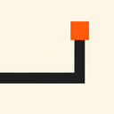

MYNT 3.4.0
原版完整更新
- 捷徑支援本機圖片、圖片網址及貼上 SVG 的自訂圖示，並保留離線 fallback。
- 新增每日語錄模式，可讓同一則語錄固定顯示一天。
- 使用
Alt + 1至Alt + 9快速開啟前九個捷徑。 - AI Tools 圖示可用右鍵直接開啟設定。
- 整合主題預載、桌布、透明度、圖示及多語系修正。
- 恢復 32 種語言；繁體中文仍為預設語言，缺少的客製字串會回退英文。
客製功能保留並融合
- 專注統計及工作區模式。
- Scratchpad、Markdown 匯出、智慧清單及轉換待辦。
- Search Bang、Command Palette、快捷鍵指南及無障礙控制。
- Pomodoro、雨聲／海浪／白噪音／營火環境音。